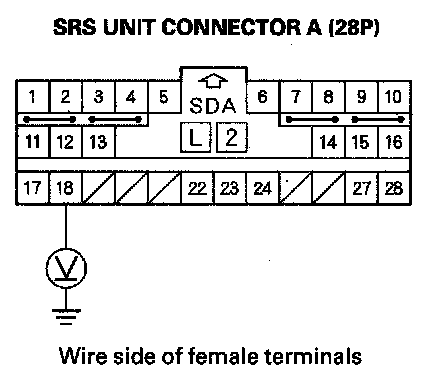
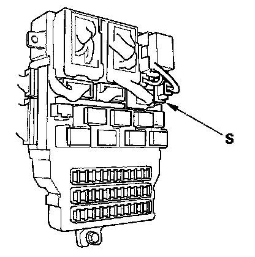
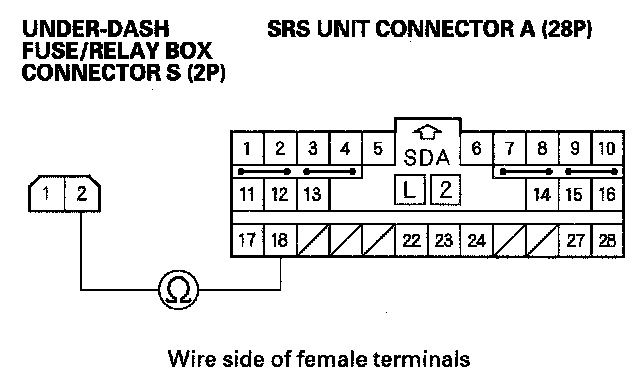

DTC A2-1x
DTC A2-1x ("x" can be 0 thru 9 or A thru F): Faulty Power Supply (VB Line)NOTE: Before doing this troubleshooting procedure, review SRS Precautions and Procedures.
1. Check the No. 22 (10 A) fuse in the under-dash fuse/relay box.
Is the fuse OK?
YES - Go to step 11.
NO - Go to step 2.
2. Replace the No. 22 (10 A) fuse.
3. Turn the ignition switch ON (II) and wait for 30 seconds. Then turn the ignition switch OFF.
4. Check the No. 22 (10 A) fuse.
Is the fuse OK?
YES - The system is OK at this time.
NO - Go to step 5.
5. Replace the No. 22 (10 A) fuse.
6. Turn the ignition switch OFF. Disconnect the negative cable from the battery, and wait for 3 minutes.
7. Disconnect SRS unit connector A (28P) from the SRS unit.
8. Reconnect the negative cable to the battery.
9. Turn the ignition switch ON (II), and wait for 30 seconds. Then turn the ignition switch OFF.
10. Check the No. 22 (10 A) fuse.
Is the fuse OK?
YES - Short to ground in the SRS unit; replace the SRS unit.
NO - Short to ground in the dashboard wire harness or in the under-dash fuse/relay box No. 22 (10 A) fuse line; replace the dashboard wire harness. If the problem is still there, replace the under-dash fuse/relay box.
11. Turn the ignition switch OFF. Disconnect the negative cable from the battery, and wait for 3 minutes.
12. Disconnect SRS unit connector A (28P) from the SRS unit.
13. Reconnect the negative cable to the battery.

14. Connect a voltmeter between the No. 18 terminal of SRS unit connector A (28P) and body ground. Turn the ignition switch ON (II), and measure the voltage. There should be battery voltage with the ignition on.
Is there battery voltage?
YES - Faulty SRS unit or poor connection at SRS unit connector A (28P) and the SRS unit; check the connection. If the connection is OK, replace the SRS unit.
NO - Go to step 15.
15. Turn the ignition switch OFF.

16. Disconnect under-dash fuse/relay box connector S (2P).

17. Measure the resistance between the No. 1 terminal of the under-dash fuse/relay box connector S (2P) and the No. 18 terminal of SRS unit connector A (28P). There should be 0-1.0 ohm.
Is the resistance as specified?
YES - Open in the under-dash fuse/relay box or poor connection between connector S (2P) and the under-dash fuse/relay box; check the connection. If the connection is OK, replace the under-dash fuse/relay box.
NO - Open in the dashboard wire harness; replace the dashboard wire harness.